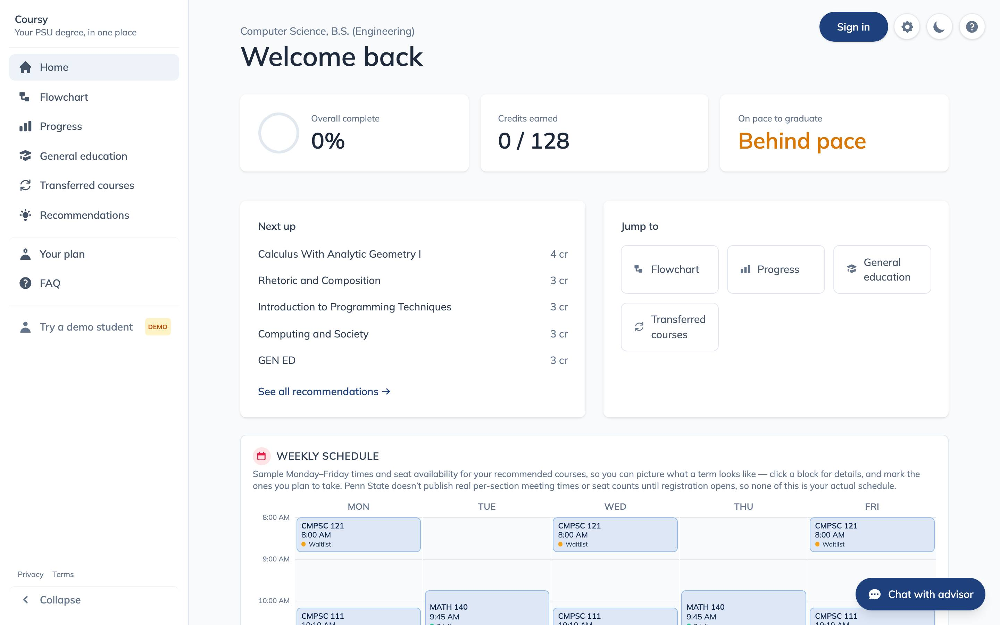
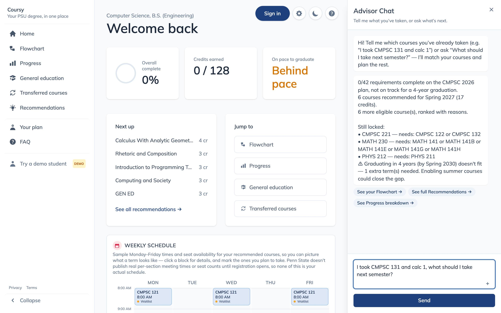
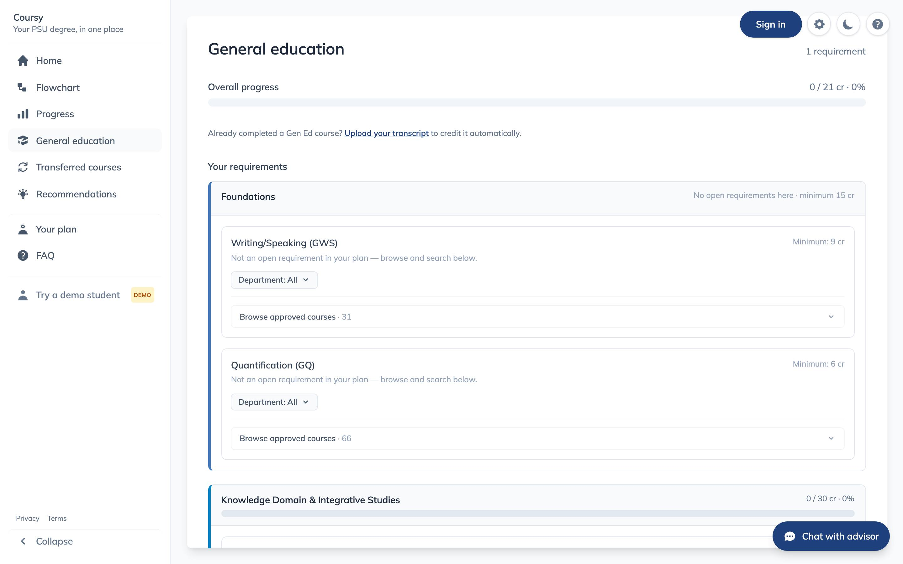
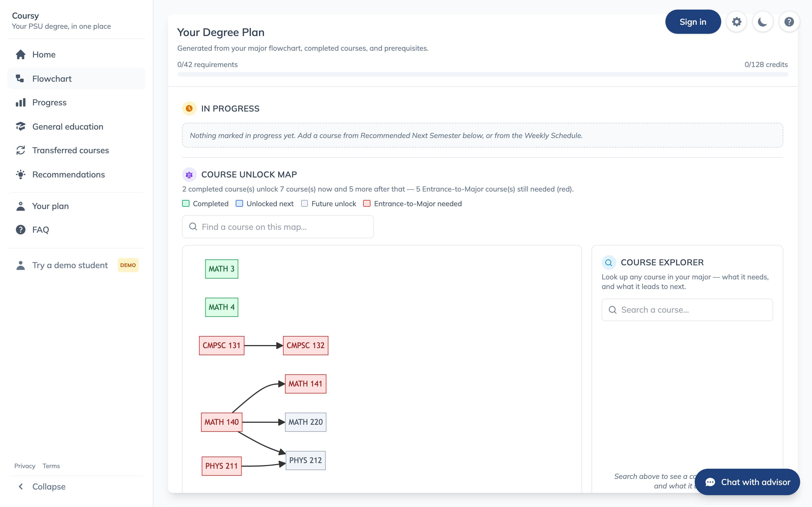

Applied AI project
Describe where you are in plain English. Get a semester-by-semester path to graduation that never breaks a prerequisite.

Every undergraduate has to sequence 40+ courses across up to eight semesters, honoring prerequisite chains, co-requisites, general-education domains, and per-semester credit caps. Advisors are stretched thin, and most of this still happens by hand, in a PDF of last year's catalog.
Prerequisite chains that branch and re-converge, courses offered only in certain semesters, and majors that quietly revise their own requirements year to year. No single tool reasons about all of it at once.
A chatbot that talks about course plans can sound right and still be wrong. Scheduling a course before its prerequisite is a factual error, not a style choice, and this project treats that distinction as the whole design constraint.
What it does
A student says "I'm a junior CMPSC major, minoring in Math, I've taken everything except my last year." The planner returns a full path to graduation that violates no prerequisite, co-requisite, or credit cap.

Class standing, transfer credit, completed courses, and major changes all parse from ordinary sentences. No forms, no dropdown maze.
Every plan comes from a rules engine checking the real course graph directly, not from text a model produced.
A second major merges into the primary plan, widening shared requirements in place so one course can satisfy two programs instead of being scheduled twice.

One decision shapes this whole system. Language models are excellent at understanding what a student means and phrasing a clear reply, and unreliable at guaranteeing a constraint holds across 40 courses. So the architecture never asks a model to do the second thing.
The model sits on both edges of the pipeline. Correctness never passes through it.
Scheduling correctness is a rules problem, not a language problem. Keeping the two apart on purpose means a hallucination can degrade phrasing but can never produce an invalid schedule.
Every course and requirement traces back to Penn State's live bulletin, checked at build time. No placeholder majors and no invented prerequisites, across 161 real programs.
750 tests, including full-plan simulations that walk a synthetic student all the way to graduation, run before anything counts as done. They were not written afterward to pad coverage.
Multi-campus offerings, shared major and minor credit, and bulk completion all landed as additive extensions. All 230 existing plan files kept working, unmodified, the whole way through.

The prerequisite graph the engine schedules against, rendered for one major.
Try it
The planner runs end to end today, with real majors, real minors, a live chat interface, and a scheduling engine tested against every program it supports.
First load can take up to a minute. The backend spins down after 15 minutes idle on its free hosting tier and wakes on the first request.